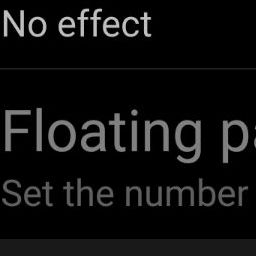

Bardia Doosti, Tao Dong, Biplab Deka and Jeffrey Nichols
UI design languages, such as Google's Material Design, make applications both easier to develop and easier to learn by providing a set of standard UI components. Nonetheless, it is hard to assess the impact of design languages in the wild. Moreover, designers often get stranded by strong-opinionated debates around the merit of certain UI components, such as the Floating Action Button and the Navigation Drawer. To address these challenges, this short paper introduces a method for measuring the impact of design languages and informing design debates through analyzing a dataset consisting of view hierarchies, screenshots, and app metadata for more than 9,000 mobile apps. Our data analysis shows that use of Material Design is positively correlated to app ratings, and to some extent, also the number of installs. Furthermore, we show that use of UI components vary by app category, suggesting a more nuanced view needed in design debates.
Some of the Material Design cropped components
Methodology
Dataset
We used Rico Dataset which includes over 72,000 Android UI screens from over 9,700 popular apps across 27 categories on the Google Play Store in early 2017.Category distribution of the apps in the Rico dataset
- Used a generic keyword to find each material design element via JSON file.
- But some of the items found this way was irrelevant.
|  |
Items found with keyword “Float”, irrelevant to “Floating Action Button”
- Detecting false positives using their JPEG file.
- Trained a Convolutional Neural Network for each Material Design which is responsible to detect that element.
- Got >95% accuracy for each Material Design element.
The heatmap of the frequency divided by maximum value of each Material Design element in Rico dataset
Results
Usage of Floating Action Buttons
(a) The percentage of apps using the Floating Action Button (FAB) in the high-rating group vs. the low-rating group. (b) Box plots of the average ratings of apps using the FAB vs. those not using the FAB. (c) The percentage of apps using the FAB in the more-installed group vs. the less-installed group. (d) Box plots of the number of installs of apps using the FAB vs. those not using the FAB.
Usage of Navigation Drawers
(a) The percentage of apps using the Navigation Drawer in the high-rating group vs. the low-rating group. (b) Box plots of the average ratings of apps using the Navigation Drawer vs. those not using the Navigation Drawer. (c) The percentage of apps using the Navigation Drawer in the more-installed group vs. the less-installed groups. (d) Box plots of the number of installs of apps using the Navigation Drawer vs. those not using the Navigation Drawer.
Material Design and App Quality
Distribution of the percentage of apps using at least one of the six common Material Design elements over percentiles in average rating (blue) and number of installs (orange)
Thumbnails of FABs in the Food and Drink category apps
Acknowledgements
This work was done in Google in a summer internship program.
| Google Research |